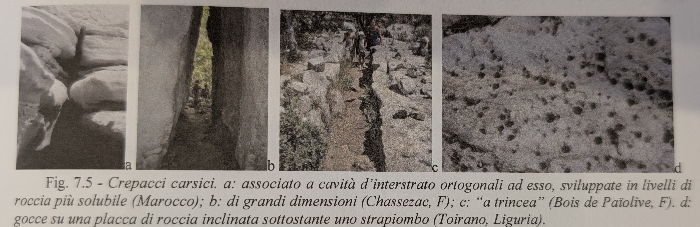
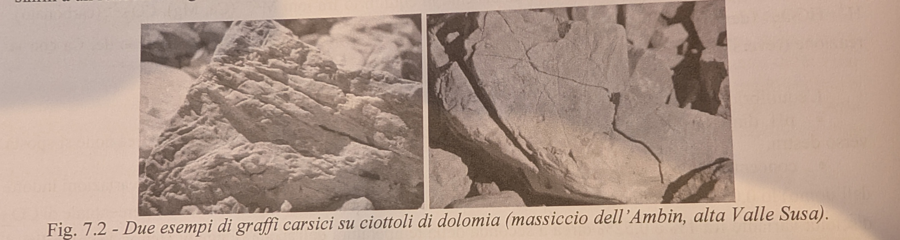
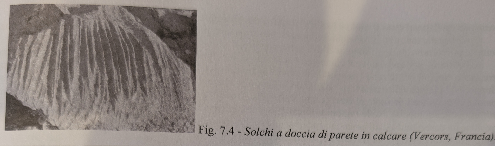
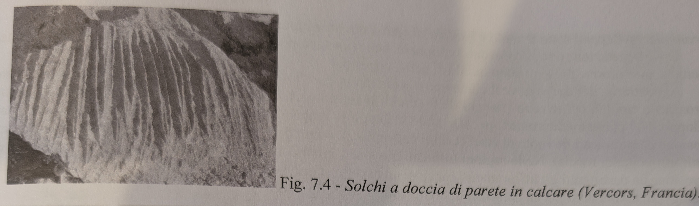
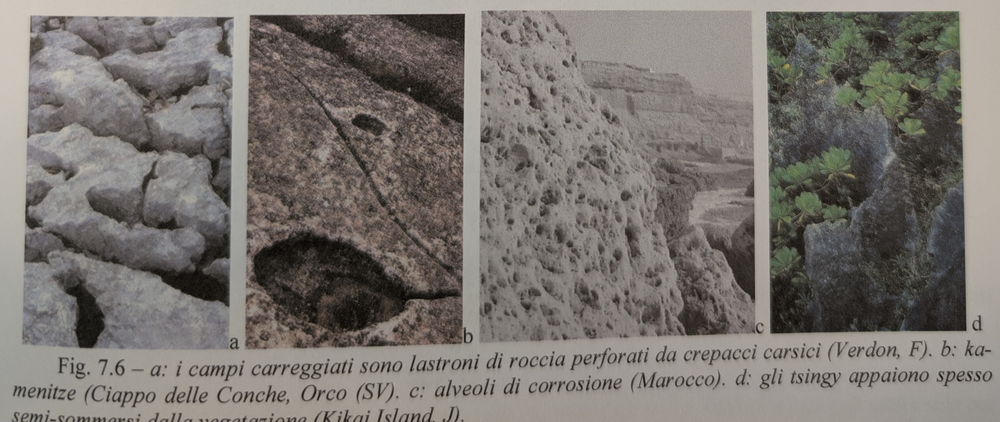
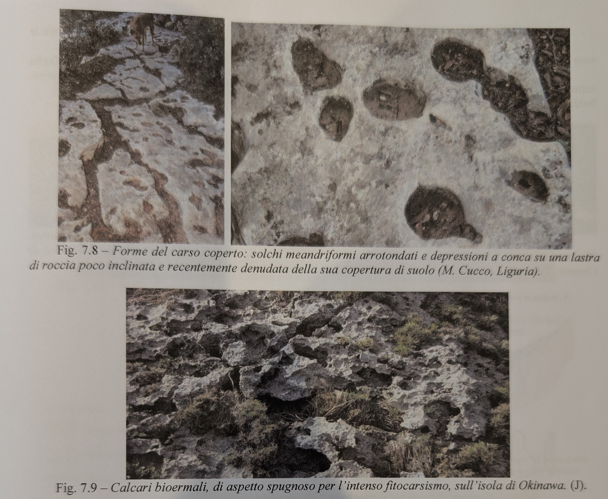
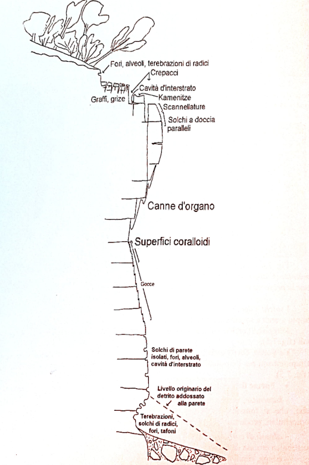
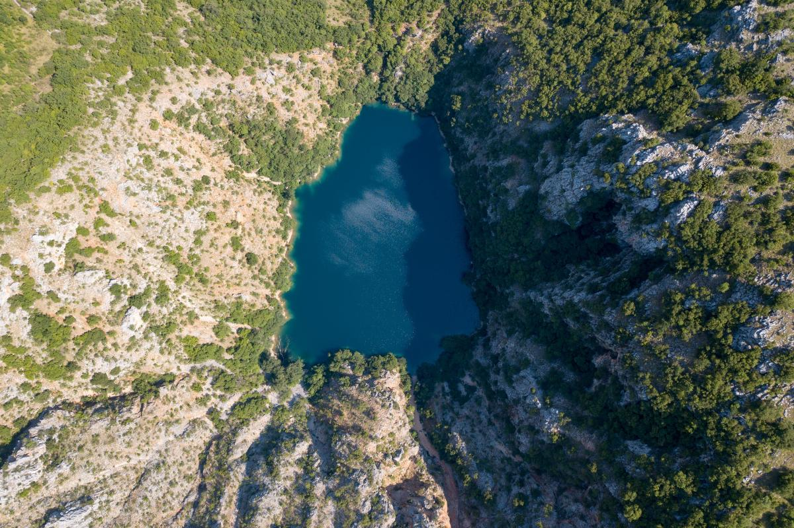
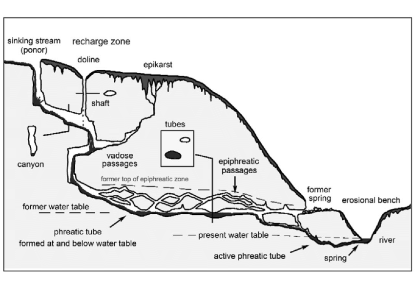

Definizione e Caratteristiche Generali
Definizione
Carsismo: processi che interessano rocce solubili attraverso corrosione chimica, producendo aumento di permeabilità e formazione di vuoti
Prodotti del Carsismo
- Forme epigee: forme superficiali (doline, scannellature, polje)
- Forme ipogee: forme sotterranee (grotte, cavità, sifoni, tubi freatici)
Meccanismi Principali
- Dissoluzione: processo dominante
- Idrolisi: alterazione strutture cristalline
- Aloclastismo: cristallizzazione salina nelle fratture
Rocce Carsificabili
Distribuzione e Importanza
Copertura globale: ~20% delle terre emerse
Tipologie di Rocce
Calcare (CaCO₃)
- Diffusione: più diffuso a livello mondiale
- Solubilità: moderata, dipendente da pH e CO₂
- Morfologie: più varie e spettacolari
Dolomia (CaMg(CO₃)₂)
- Caratteristiche: più fragile del calcare
- Limitazioni: meno adatta a grandi forme carsiche
- Comportamento: fratturazione più intensa
Gesso (CaSO₄·2H₂O)
- Solubilità: molto elevata
- Morfologie: forme meno estese ma più rapide
- Problemi: instabilità strutturale
Sali Evaporitici
- Tipologie: sali potassici, salgemma
- Solubilità: estremamente elevata
- Paesaggi: fragili, evoluzione rapidissima
Silice
- Solubilità: molto bassa
- Forme: microforme simil-carsiche
- Condizioni: climi tropicali molto umidi
Dissoluzione dei Carbonati
Reazione Fondamentale
Equilibrio chimico: CaCO₃ + H₂O + CO₂ ⇌ Ca²⁺ + 2HCO₃⁻
Fattori di Controllo
pH della Soluzione
- Condizioni acide: pH <7 → accelerazione dissoluzione
- Condizioni basiche: pH >7 → precipitazione carbonati
- Zona ottimale: pH 4-6 per massima corrosione
Concentrazione CO₂
- Alta [CO₂]: maggiore aggressività dell’acqua
- Fonti CO₂: atmosfera, respirazione suoli, decomposizione organica
- Variazioni stagionali: massima in estate per attività biologica
Temperatura
- Solubilità CO₂: inversamente proporzionale a temperatura
- Velocità reazione: direttamente proporzionale a temperatura
- Effetto netto: dipende dal fattore limitante
Corrosione da Miscelazione
Meccanismo: acque con temperature diverse si mescolano Risultato: disequilibrio → rinnovata capacità corrosiva Importanza: nelle zone di contatto idrico
Microforme Carsiche Epigee
Fattori di Controllo
- Litologia: tipo di roccia carbonatica
- Pendenza: inclinazione superficie
- Precipitazioni: quantità e regime
- Copertura vegetale: presenza e densità
- Tempo di esposizione: durata all’alterazione subaerea
Forme del Carso Nudo
Caratteristiche Generali
- Agente: dissoluzione da acqua meteorica
- Aspetto: forme taglienti, acute
- Distribuzione: rocce esposte senza copertura
Tipologie Principali
Graffi:
- Morfologia: incisioni lineari superficiali
- Genesi: scorrimento laminare acqua piovana
- Dimensioni: millimetriche-centimetriche
Scannellature:
- Morfologia: solchi ramificati con sezione concava
- Genesi: reticolo idrografico in miniatura
- Pattern: dendritico, anastomizzato
Solchi a doccia:
- Morfologia: incisioni da flusso concentrato
- Localizzazione: pareti verticali
- Genesi: cascatelle temporanee
Gocce:
- Morfologia: piccole cavità emisferiche
- Genesi: stillicidio prolungato
- Localizzazione: sotto sporgenze rocciose
Crepacci carsici:
- Morfologia: profonde fratture verticali o trincee
- Genesi: allargamento fratture tettoniche
- Dimensioni: decimetriche-metriche
   

Forme Fitocarsiche
Caratteristiche Generali
- Substrato: roccia nuda con attività biologica
- Agente: CO₂ e acidi organici di origine biologica
- Morfologie: più arrotondate rispetto al carso nudo
Tipologie Specifiche
Kamenitze:
- Morfologia: vasche su roccia pianeggiante
- Genesi: ristagnio acqua → sviluppo alghe unicellulari
- Processo: produzione CO₂ e acidi organici → corrosione
Alveoli di corrosione (honeycomb):
- Morfologia: cavità piccole a nido d’ape
- Genesi: bio-corrosione localizzata
- Associazione: spesso con microrganismi
Tsingy:
- Morfologia: lame taglienti alte alcuni metri
- Distribuzione: climi tropicali
- Genesi: corrosione differenziale intensa
Forme del Carso Semilibero e Coperto
Caratteristiche Generali
- Copertura: parzialmente ricoperto da suolo o neve
- Contatto: acqua aggressiva quasi permanente
- Morfologie: forme arrotondate, meno acute
Tipologie
Karren arrotondati:
- Posizione: sotto copertura suolo
- Morfologia: solchi smussati
- Genesi: corrosione prolungata in ambiente protetto
Solchi di radici:
- Agente: bio-corrosione da apparati radicali
- Morfologia: solchi meandriformi (humus-water grooves)
- Controllo: distribuzione vegetazione
 
Distribuzione Altitudinale
Influenza della Pendenza
Zonazione tipica:
- Parte alta: graffi, scannellature, canne d’organo
- Metà parete: crepacci, gocce
- Parte bassa: solchi di radici, bio-corrosione

Macroforme Carsiche Epigee
Doline e Uvala
Definizione Generale
Doline: depressioni decametriche di forma ovale/circolare con drenaggio esclusivamente sotterraneo
Caratteristiche comuni:
- Prime forme a svilupparsi nel carsismo
- Più comuni nel paesaggio carsico
- Evoluzione nel tempo
Tipologie di Doline
Doline a Imbuto
Morfologia:
- Versanti: ripidi ricoperti di suolo
- Centro: inghiottitoio per convogliare acqua sottoterra
- Profondità: elevata (specialmente climi tropicali)
Ambiente: carsi in rapido sviluppo
Doline a Fondo Piatto
Morfologia:
- Forma: larghe e poco profonde
- Fondo: pianeggiante per accumulo sedimenti
- Distribuzione: climi temperati o tropicali con stagione secca
Genesi: evoluzione da doline a imbuto
- Impurezzze insolubili della roccia
- Tappamento fessure di drenaggio
- Formazione laghi temporanei o fondi di terra rossa
Doline di Crollo
Morfologia:
- Fianchi: verticali e strapiombanti
- Genesi: collasso volta cavità sotterranee
- Esempi: cenotes (spesso allagati)
Doline di Subsidenza
Caratteristiche:
- Materiali: rocce insolubili permeabili (sabbie, ceneri vulcaniche, till)
- Substrato: rocce solubili sottostanti
- Meccanismo: sprofondamento durante formazione cavità
Megadoline
Dimensioni:
- Larghezza: >500 m
- Profondità: >100 m
- Morfologia: forma a scodella o piatto
- Evoluzione: sviluppo da doline normali in tempi lunghi
Cockpit
Caratteristiche:
- Natura: depressioni fluviocarsiche
- Dimensioni: grandi
- Clima: tropicali molto umidi
- Associazione: con morfologie complesse
Uvala
Definizione: depressioni derivanti dall’unione di doline contigue Morfologia: forme complesse, spesso allungate Evoluzione: stadio avanzato del carsismo

Polje
Definizione e Caratteristiche
Polje: grandi depressioni carsiche (anche decine di km²) con fondo piatto
Caratteristiche Morfologiche
- Dimensioni: chilometriche
- Fondo: pianeggiante, spesso alluvionato
- Allagamenti: stagionali o permanenti
- Bordi: spesso ripidi
Tipologie di Polje
Polje Marginale
- Posizione: al margine di massa carbonatica
- Drenaggio: verso l’esterno del carso
Polje di Attraversamento
- Posizione: interno al carso
- Drenaggio: fiumi allogenici lo attraversano
Polje di Livello di Base
- Posizione: alla quota di emergenza sorgenti carsiche
- Controllo: livello di base locale
 
Valli Carsiche
Canyon Carsici
Genesi: scavati da fiumi sotterranei Evoluzione: venuti all’aria per crolli della volta Morfologia: profonde gole con fianchi verticali
Fiumi allogenici: acque da bacini con rocce insolubili in quantità tale da non essere completamente assorbite
Valli Secche
Caratteristiche: senza deflusso superficiale permanente Genesi: abbassamento livello di base → cattura sotterranea
Valli Cieche
Terminazione: in grotta alla base della parete Alternativa: termine in doline o inghiottitoi Funzione: punto di assorbimento acque superficiali
Valli di Risorgenza
Genesi: scavate da grandi corsi d’acqua che riemergono Caratteristiche: portate elevate da sistemi carsici estesi Morfologia: valli ben incise con sorgenti vauclusiane
Carso Ipogeo
Formazione delle Discontinuità
Origine delle Fratture
Macrodisequazione: grandi fessure verticali
- Origine: stress tettonici delle catene montuose
- Morfologia: grotte tettoniche strette e profonde
Stress tettonici: tipici di ambienti orogenici
- Reticolo fitto: acqua senza vie di fuga → grotte labirintiche
- Fiumi sotterranei: quando fratture organizzate
Porosità della roccia: in assenza fratture importanti
- Infiltrazione diffusa: fino a strati impermeabili
- Grotte orizzontali: numerose e poco profonde
Circolazione Idrica Sotterranea
Epicarso
Posizione: sotto suolo e forme carsiche superficiali Caratteristiche:
- Ricco di fessure prevalentemente verticali
- Acqua scorre in fusoidi
- 75% corrosione carsica globale
Processo di saturazione:
- Acqua si satura di carbonati scendendo
- Fessure si restringono → forma a imbuto
- Forti piogge → allagamento epicarso
- Falda temporanea → infiltrazione in fessure orizzontali
Zona Vadosa
Posizione: sotto epicarso Caratteristiche:
- Contiene aria e acqua
- Prevalgono condotti verticali (pozzi)
- Fessure allargate in forme cilindriche
Processi:
- Azione meccanica dell’acqua che cade a cascata
- Allargamento preferenziale fessure verticali
Zona Epifreatica
Caratteristiche: allagamento stagionale in climi stagionali
- Stagioni umide: allagata
- Stagioni secche: emersa
Formazione gallerie paragenetiche:
- Semi-intasamento: sedimenti alluvionali
- Corrosione rinnovata: miscelazione per temperature diverse
- Solchi sinuosi: su soffitti liberi da sedimenti
- Cavità emisferiche: sui soffitti
Pendenti: lame taglienti di roccia simili a stalattiti
- Formazione: processo erosivo antigravitativo
- Condizioni: gallerie svuotate da sedimenti
Sifoni: gallerie basse permanentemente allagate
- Causa: ostruzione da sedimenti
- Effetto: acqua costretta a scavare in alto
Zona Freatica
Posizione: più profonda, permanentemente satura Caratteristiche:
- Pressione aumenta con profondità
- Deflusso per principio vasi comunicanti (non gravità)
Dissoluzione sotto pressione:
- Acqua pressurizzata dissolve intensamente
- Formazione tubi freatici (sezione circolare)
Sviluppo preferenziale: al limite rocce solubili/impermeabili
- Alternative: molto profondi con ritorno superficie
- Sorgenti vauclusiane: grandi portate d’acqua
Ipercarsismo: risalita attraverso rocce insolubili
- Acque termali: di profondità, gassose e acide
- Corrosività elevata: per caratteristiche chimiche speciali
Sezioni Tipiche delle Grotte
Morfologie Caratteristiche
- Fusoidali: sezioni verticali a goccia
- Pozzi: condotti verticali profondi da stillicidio
- Gallerie epifreatiche: orizzontali, spesso sedimentate
- Tubi freatici: sezione rotonda/ellittica

Livello di Base Carsico
Definizione e Controllo
Livello di base: corrisponde alla quota di risorgenza delle acque carsiche
Evoluzione del Sistema
Abbassamento livello: per erosione e sollevamento tettonico
- Gallerie superiori: diventano inattive
- Processi: sedimentazione, speleogenesi chimica
- Formazioni: stalattiti, stalagmiti
Buchi di serratura: gallerie attive transizionali
- Forma: sezione caratteristica
- Posizione: tra zona vadosa e freatica
Crolli: creano grandi saloni sotterranei
- Cause: instabilità strutturale
- Dimensioni: spazi molto ampi

Esempi Significativi
Grotta Abukumado (Giappone): più livelli di gallerie
- Evidenza: diversi livelli di base
- Evoluzione: abbassamento progressivo
Grotte marine: risorgenti sotto livello marino
- Esempio: Grotta del Bue Marino (Sardegna)
- Particolarità: interazione acqua dolce/salata
Circolazione dell’Aria e Corrosione
Meccanismo delle Correnti d’Aria
Controllo Termico
Differenze termiche: tra ingressi generano correnti stagionali
Cicli Stagionali
Estate:
- Esterno: aria calda
- Grotta: aria fredda stabile in basso
- Circolazione: aria esterna entra, fredda esce dal basso
Inverno:
- Esterno: aria fredda
- Grotta: aria calda relativa in basso
- Circolazione: aria calda esce dall’alto, fredda entra
Effetti Corrosivi
Processi di Condensazione
- Condensazione: su pareti della grotta
- Corrosione: incrementata da acqua di condensa
- Morfologie: cavità emisferiche, strutture simili a pozzi
Grotte Termali
Grotte con aria calda: temperatura superiore all’esterno
- Esempio: Monte Kronio (Sicilia)
- Strutture: simili a camere termali
- Processi: corrosione accelerata da vapori caldi
Significato della Ventilazione
- Ricambio d’aria: mantiene disequilibri chimici
- Trasporto umidità: alimenta processi corrosivi
- Controllo climatico: delle grotte
- Speleogenesi: contributo ai processi di formazione